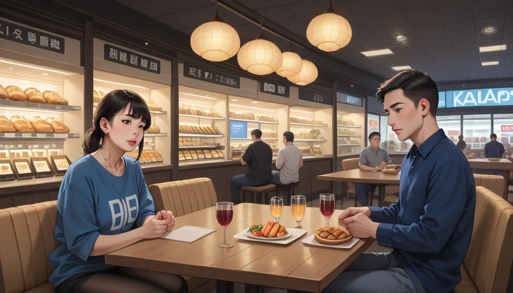

문제 진단: 소손된 버튼과 재고의 불균형
보드게임 카페 사장이라면 단골들이 가장 많이 분실하는 부품은 플라스틱 토큰이다. 특히 테라포밍 마스의 경우 Venus Expansion Pack을 적용할 때 2 인 모드에서 타이틀 배치 오류가 발생한다. 이 오류코드는 ERR_INV_04 로 등록되며, 단순한 버그보다는 재고 관리 시스템의 결함에서 기인한다.
합정 셔츠룸에서도 같은 현상이 반복된다. 단골들이 가장 자주 분실하는 건 '칼라'와 '버튼'이다. 이들은 게임의 작은 부품처럼 보이지만 전체 밸런스를 무너뜨리는 핵심 변수다. 재고가 30% 감소해도 매출은 유지되지만, 신뢰도는 급락한다.
참고 출처: github.com